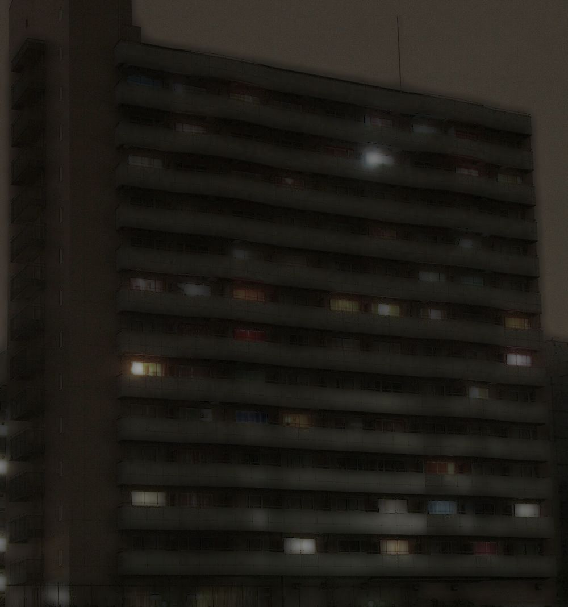

קנייה ומכירה של דירות ובתיםBuying and selling homes
מהבדיקות הראשונות ועד מסירת המפתח.From the first checks to the handover of the key.
קונספט לדוגמה שנבנה עבור עו״ד סוזי דניאלי · זה אינו האתר הרשמי של העסקA sample concept built for Adv. Suzi Danieli · This is not the business’s official website
ליווי בקנייה ומכירה של דירות ובתים, וייעוץ בענייני עבודה. מנחם בגין 35, טירת כרמל.Legal guidance when buying or selling a flat or a house, and advice on employment matters. 35 Menachem Begin St, Tirat Carmel.
עו״ד סוזי דניאליAdv. Suzi Danieli
מנחם בגין 35 · טירת כרמל35 Menachem Begin · Tirat Carmel
32 ביקורות בגוגל32 Google reviews
עורכת דין בטירת כרמל, שמלווה קונים ומוכרים של דירות ובתים.A lawyer in Tirat Carmel who guides people buying and selling flats and houses.
״הרגשתי שאני נמצאת בידיים טובות ושיש מי שדואגת לאינטרסים שלי לאורך כל הדרך.״
“I felt I was in good hands, with someone looking after my interests all the way.”
מילים מתוך הביקורות בגוגלWords from her Google reviews
מהבדיקות הראשונות ועד מסירת המפתח.From the first checks to the handover of the key.
התייעצות בשאלות של עבודה.Advice on questions that come up at work.
4.9
32 ביקורות בגוגל32 Google reviews
טירת כרמלTirat Carmel
כך מתקדמת עסקת דירה, מהשיחה הראשונה ועד המפתח.How a home deal moves, from the first call to the key.

״בכל שלב היא הקפידה להסביר לי הכול בצורה ברורה ומפורטת, תמיד בחיוך, בסבלנות ובהכלה יוצאת דופן.״
“At every stage she made sure to explain everything to me clearly and in detail, always with a smile, with patience and remarkable understanding.”
״הגעתי לסוזי דרך המלצה מקרית בתהליך של קניית בית. מהשיחה הראשונה ידעתי שהגעתי למקום נכון- עורכת דין רהוטה, אנושית, קשובה, תקתקנית ומסודרת…״
“I came to Suzi through a recommendation while buying a house. From the first conversation I knew I had come to the right place — an articulate, humane, attentive, efficient and organised lawyer…”
״התייעצנו עם סוזי בנוגע לענייני עבודה של בן הזוג שלי, וכבר מהשיחה הראשונה הרגשנו שאנחנו בידיים טובות.״
“We consulted Suzi about my partner’s employment matters, and from the very first conversation we felt we were in good hands.”
בחרו נושא, וההודעה תיפתח מוכנה בוואטסאפ.Pick a subject and the message opens ready in WhatsApp.